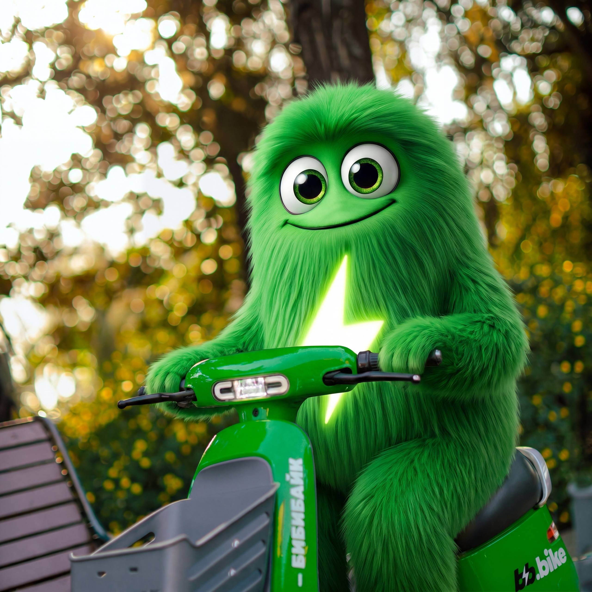
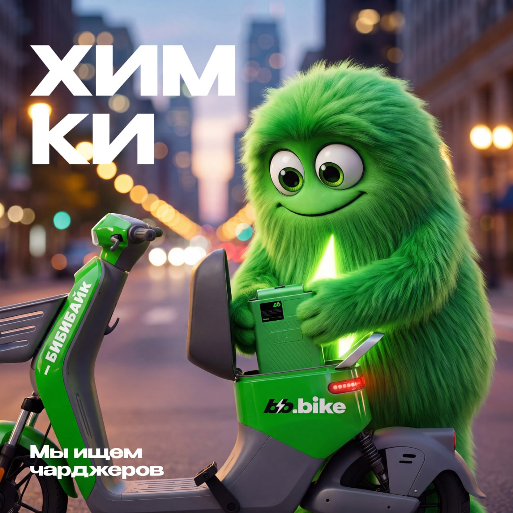

Макет идеи · Кирилл → Олегу · июль 2026
Задача — привлечь молодёжь на подработку в помощь скаутам. Моё предложение: живое комьюнити с bb-бонусами — люди сами зовут друзей и сами выходят помогать.

Найти способ привлечь молодёжь к работе в поле — в помощь скаутам.
Фан-канал bb.bike, куда вступает кто угодно, + бот с bb-бонусами и реферальной системой. Аудитория растёт сама и конвертируется в работников.
Открытый Telegram-канал для всех, кому нравится бибибайк: новости, движ и подработка — всё в одном месте, куда хочется возвращаться.
Новости для своих + глобальные новости bb.bike. Причина заходить каждый день.
Удержание
Ребята переписываются между собой, делятся фотками и историями с поездок.
Вовлечение
То, ради чего всё: подработка в поле, помощь скаутам, награды за выходы.
Конверсия в поле

Именно здесь публикуются приглашения на подработку: «Мы ищем чарджеров», выходы в помощь скаутам, награды за смены. Фирменные визуалы с маскотом — люди сразу понимают, что это свои.
Плюс конкурсы и опросы: «что улучшить, что добавить?» — люди сами подсказывают, как развивать канал, и чувствуют себя частью команды.
Второй бот отвечает за выдачу bb-бонусов. Главная механика — «пригласи друга».
Получает у бота персональную ссылку и зовёт друзей в канал.
Оформляется, чтобы выйти на подработку.
+ bb-бонусы другу за регистрациюРеально помогает скаутам в поле — то, что и нужно компании.
+ bb-бонусы пригласившему за каждый выход другаЕму тоже выгодно приглашать — цепочка запускается заново.
Система кормит сама себя: каждый новый участник — и аудитория канала, и потенциальные руки в поле, и источник следующих приглашений.
Рост аудитории
Люди приглашают людей ради бонусов — канал расширяется без бюджета на рекламу.
Руки в поле
Молодёжь не просто подписывается — регистрируется и выходит помогать скаутам.
Влюбись в город с Бибибайк ⚡
Ярко-зелёный, с корзинкой и запасом хода до 80 км. Да, это педали. Их можно крутить 😊